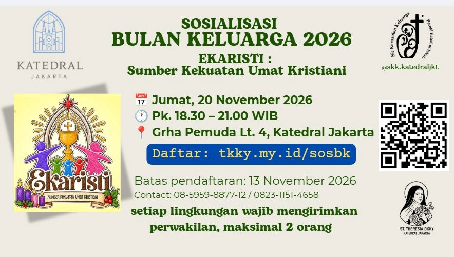
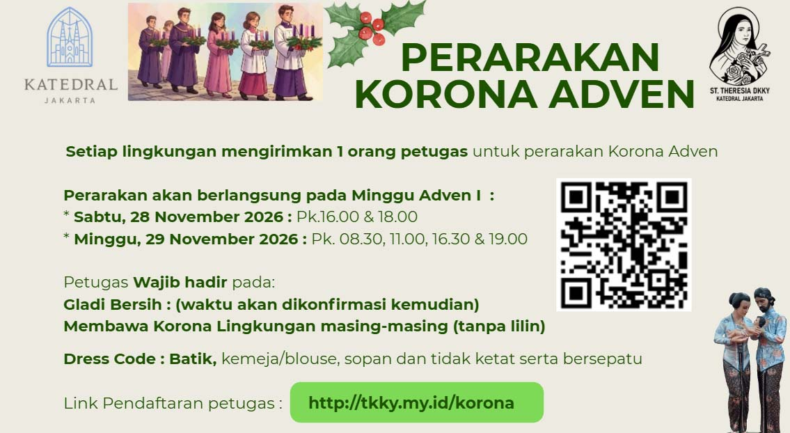
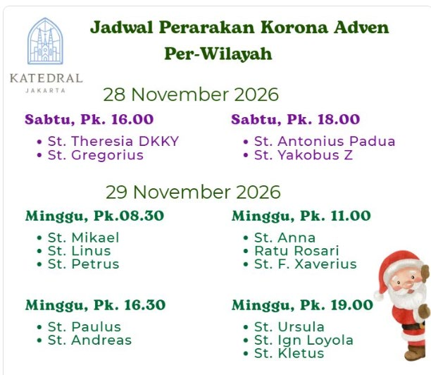
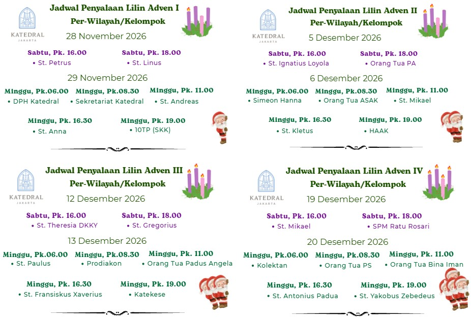

Persiapan Menyambut Natal 2026
Jadwal dan pendaftaran petugas untuk masa Adven
Halo Bapak/Ibu Ketua Lingkungan dan seluruh umat yang terkasih.
Menyambut masa Adven 2026, mari kita bersama-sama menyiapkan pertemuan lingkungan
dengan menimba kekuatan dari Ekaristi dan menjadi terang bagi sesama.
Tema: “Ekaristi: Sumber Kekuatan Umat Kristiani”
Jumat, 20 November 2026
Pk. 18.30 – 21.00 WIB
Grha Pemuda Lt. 4, Katedral Jakarta
Maksimal 2 orang per Lingkungan
Jumat, 13 November 2026
Akan ada penjualan lilin korona Adven. Bawalah uang pas Rp 40.000Pemesanan lilin ada pada formulir pendaftaran. Jangan lupa bawa alat tulis dan botol minum sendiri.

Setiap Lingkungan mengirim 1 petugas

Panitia Natal 2026 Wilayah Theresia dari Kanak-Kanak Yesus mengundang seluruh Lingkungan untuk mengirim perwakilan dalam Perarakan Korona Adven.
Sabtu, 28 November 2026 → Pk. 16.00 & 18.00
Minggu, 29 November 2026 → Pk. 08.30, 11.00, 16.30 & 19.00
Minggu, 22 November 2026 · Pk. 13.00
Membawa Korona lingkungan masing-masing (tanpa lilin)
15 November 2026
Dilakukan saat Sosialisasi Bulan Keluarga (20 Nov). Perwakilan membawa uang pas Rp 40.000.

Petugas Keluarga Penyala Lilin Adven 2026
Syalom Bapak/Ibu Warga Paroki Katedral Jakarta yang terkasih.
Panitia Natal 2026 Wilayah Theresia dari Kanak-Kanak Yesus mengundang seluruh Wilayah
dan kepengurusan Seksi maupun kategorial untuk mengirim perwakilan pasutri
sebagai Petugas Keluarga Penyala Lilin Adven.
Minggu Adven I – IV
Sabtu: Pk. 16.00 & 18.00
Minggu: Pk. 06.00, 08.30, 11.00, 16.30 & 19.00
15 November 2026
Setiap wilayah / pengurus / kategorial wajib mengirimkan pasutri perwakilan.

Silakan pilih sesuai kebutuhan